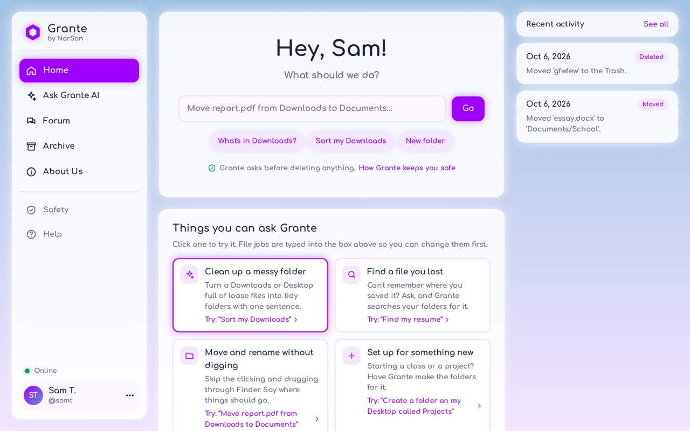

Clean up a messy folder
Turn a Downloads or Desktop full of loose files into tidy folders with one sentence.
“Sort Desktop/Projects”
You're signed in
Ask Grante to sort a messy folder, find a file you lost, or explain something. Then say hi in your town's forum.
File tools work in Chrome or Edge on a computer. Chat and the forum work everywhere.

Tango Bhat · Founder, NarSan
Hey, I'm Tango, a 13 year old kid. I started NarSan to make AI that helps with everyday things, and Grante is the first thing I’ve built. I’m testing it with friends right now, so tell me what you like and what’s broken. In my free time, I like to play guitar, fix bikes, and woodwork. One major acheivement about me is that I got 5th place in the National US Geography Bee. Hope you enjoy Grante!
NarSan is a new company building helpful, trustworthy AI. Grante is its first product.
Type what you want in plain words.
Turn a Downloads or Desktop full of loose files into tidy folders with one sentence.
“Sort Desktop/Projects”
Ask where something is, or say where it should go, and skip the dragging.
“Move report.pdf to School”
Get things explained, brainstorm ideas, or make a study plan. It can be wrong, so check important facts.
Ask Grante AI
A forum for your town, one for your country, and one for everyone.
The forum
About a minute of setup, then you're going.
For the file tools, use Chrome or Edge on a Windows, Mac, Linux, or Chromebook computer.
Want it to feel like an app? In Chrome, open Grante, click the three dots at the top right, then Cast, save, and share → Install page as app. In Safari on a Mac, choose File → Add to Dock. Grante then gets its own icon.
How Grante treats your files and your information.
Grante can't see anything else on your computer, and you can remove a folder any time.
Deleted files go to a “Grante Trash” folder you can open anytime. Grante never overwrites a file.
By default Grante waits for your OK before deleting. You choose which actions need your OK.
To decide what to do, Grante's AI sees file and folder names, never what's inside your files.
In the forum, people see your name and username, never your email.
Chats and your Archive are saved in this browser on this device.
The honest part: Grante is an AI, and AI makes mistakes. It can pick the wrong file, so keep a backup of anything important. Answers can take up to a minute, and the first one after a quiet spell takes longer while the AI wakes up. Opening apps only works in the Mac app.